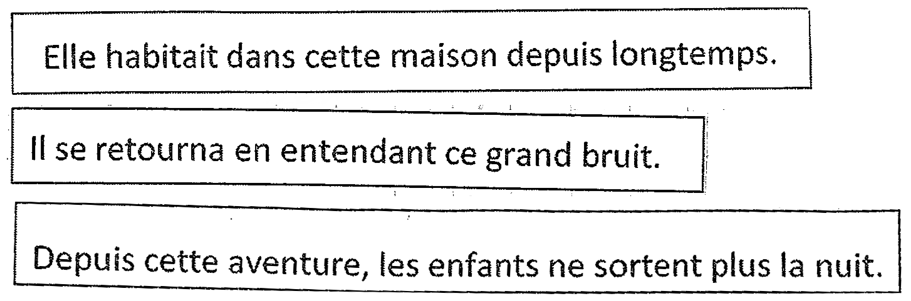

Ce site met à disposition la ressource linguistique Resolco exploitée pour l'analyse de la cohérence discursive et de la continuité référentielle dans des productions écrites d'élèves et d'étudiants de différents niveaux de scolarité (du CE2 à l'Université).
Ci-dessous la présentation des pages du site.
Le Corpus RésolCo, constitué dans la cadre du projet É:calm, naît de la volonté de mettre à disposition de la communauté scientifique et du grand public des transcriptions de manuscrits d'élèves et d'étudiants. Plusieurs couches d'annotation sont associées aux transcriptions. Ces différentes couches relèvent de niveaux d’analyse complémentaires : traces du processus d’écriture, normalisation orthographique, étiquetage morphosyntaxique, analyse syntaxique en dépendance et annotation de certaines structures discursives (Garcia-Debanc et al. 2017).
Actuellement ce corpus compte 624 textes transcrits et normalisés orthographiquement. Un certain nombre de copies est actuellement en cours de traitement et un récolte de nouvelles copies est encore prévue.
Il est possible de contribuer à la récolte des copies en utilisant la consigne et les documents nécessaires à la collecte des textes. Cette consigne et ces documents sont disponibles au format .pdf au lien suivant : documents pour la récolte des textes d'élèves.
L'originalité et la particularité du corpus RésolCo réside dans le fait que les textes produits répondent tous à une même consigne d'écriture.
Celle-ci est une tâche-problème imposant aux élèves la résolution de problèmes de cohésion textuelle (Garcia-Debanc et Bonnemaison, 2014 ; Garcia-Debanc et Bras, 2016)
L'objectif de cette consigne, fournie ci-dessous, est de provoquer chez le scripteur la mise en oeuvre de stratégies de Résolution des problèmes de Cohérence soulevés par l'intégration de trois phrases.
|
Consigne : Racontez une histoire dans laquelle vous insérerez, séparément et dans l'ordre donné, les trois phrases suivantes :  Vous pouvez découper les bandelettes contenant les phrases ci-dessous ou bien recopier chaque phrase avec soin à l'identique de celles qui vous sont données. |
Les trois phrases en jeu dans cette consigne impliquent des stratégies discursives variées, amenant le scripteur à gérer plusieurs continuités référentielles et planifier son discours afin d'assurer la cohérence de son texte (Garcia-Debanc et al. 2017).
Ci-dessous un exemple de copie récoltée en 2016 dans une classe de CM2.
 .
.
| Niveau Scolaire | École / Classe | Année Scolaire | Nb. Textes | Nb. Mots |
|---|---|---|---|---|
| Total RésolCo | 348 | 68 573 | ||
| 3e | VTAC305 | 2016 | 25 | 6 152 |
| VTAC305 | 2018 | 18 | 6 474 | |
| FSBJC6 | 2018 | 14 | 4 435 | |
| Total 3e | 54 | 17 061 | ||
| 4e | LSPJJRC | 2018 | 29 | 8 670 |
| LSPJJRD | 2018 | 18 | 4 342 | |
| Total 4e | 47 | 13 012 | ||
| 6e | VTAC603 | 2016 | 22 | 5 118 |
| PJPR5 | 2016 | 16 | 2 917 | |
| PJPR1 | 2016 | 24 | 3 972 | |
| PJPR4 | 2016 | 6 | 1 000 | |
| Total 6e | 68 | 13 007 | ||
| CM2 | SGLEA | 2016 | 22 | 3 831 |
| SGLEB | 2016 | 21 | 3 701 | |
| VRX | 2016 | 4 | 1 803 | |
| MQRVX | 2016 | 17 | 2 264 | |
| Total CM2 | 92 | 10 879 | ||
| CM1 | TFGLX | 2015 | 20 | 2 728 |
| BRX | 2016 | 2 | 177 | |
| VRX | 2016 | 6 | 945 | |
| TBZX | 2017 | 6 | 1 064 | |
| SEZB | 2018 | 5 | 436 | |
| Total CM1 | 39 | 5 350 | ||
| CE2 | PBOX | 2015 | 21 | 2 082 |
| SGLEB | 2016 | 2 | 198 | |
| VRX | 2016 | 4 | 410 | |
| TBZX | 2017 | 8 | 1 067 | |
| Total CE2 | 35 | 3 757 | ||
| M2 | TUTJ2 | 2018 | 13 | 5 507 |
| Total M2 | 13 | 5 507 | ||
Site développé par S. Federzoni et L.M. Ho-Dac (contact).